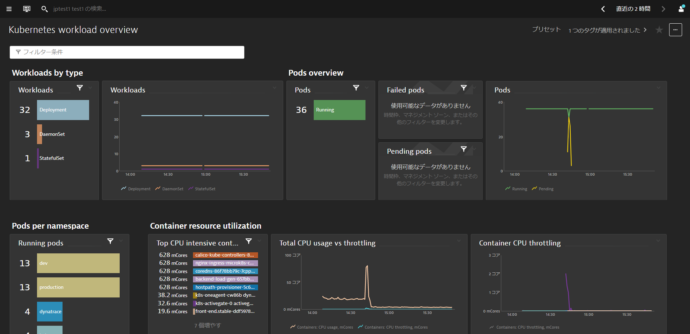

This repository contains labs for the Hands-On Kubernetes Session. We will be using Kubernetes instance running in AWS for this hands-on but this will work on other platforms as well.
For the purposes of the Hands-On, we will automate and make the steps seamless for the participants
Prerequisites
- Dynatrace SaaS/Managed Account. Get your free SaaS trial here.
- SSH client such as mobaxterm.
- Chrome Browser
What You'll Learn
- Deploying Dynatrace Operator
- Explore Automatic Kubernetes Dashboards
- Kubernetes Labels & Annotations
- Process Group Naming & Service Naming for Kubernetes
- Discover various Kubernetes View on Dynatrace
- Kubernetes Namespace
- Kubernetes Workloads
- Kubernetes Containers / Pods
In this exercise, we will deploy the OneAgent to a Linux instance running Kubernetes(Microk8s) and let the OneAgent discover what is running in that instance.
Using Terminal via Web Browser
To faciliate the labs, we will access the Linux instance via terminal through a web browser.
Use the URL was provided in your email to access the SSH terminal. Make sure the URL looks like Public IP Address:8080/wetty
Use the login name and password as provided in your email.

Download the OneAgent
Open your browser and access the Dynatrace URL.
Follow these steps below:
- Search for Hub from the navigation menu.
- Star it to add to favourites and click on it.
- Select Kubernetes
- Select Monitor Kubernetes button from the bottom right.

Within the Monitor Kubernetes / Openshift page, follow these steps below:
- Enter a Name for the connection Eg.
k8s - Click on Create tokens to create PaaS and API tokens with appropriate permissions
- Toggle ON Skip SSL Certificate Check
- Click Copy button to copy the commands.
- Paste the command into your terminal window and execute it.

Example:
Connecting to github-releases.githubusercontent.com (github-releases.githubusercontent.com)|185.199.108.154|:443... connected.
HTTP request sent, awaiting response... 200 OK
Length: 7310 (7.1K) [application/octet-stream]
Saving to: ‘install.sh'
install.sh 100%[=====================================================>] 7.14K --.-KB/s in 0s
2021-06-01 05:46:36 (40.7 MB/s) - ‘install.sh' saved [7310/7310]
Check for token scopes...
Check if cluster already exists...
Creating Dynatrace namespace...
Applying Dynatrace Operator...
Warning: apiextensions.k8s.io/v1beta1 CustomResourceDefinition is deprecated in v1.16+, unavailable in v1.22+; use apiextensions.k8s.io/v1 CustomResourceDefinition
customresourcedefinition.apiextensions.k8s.io/dynakubes.dynatrace.com created
serviceaccount/dynatrace-dynakube-oneagent created
serviceaccount/dynatrace-dynakube-oneagent-unprivileged created
serviceaccount/dynatrace-kubernetes-monitoring created
serviceaccount/dynatrace-operator created
serviceaccount/dynatrace-routing created
podsecuritypolicy.policy/dynatrace-dynakube-oneagent created
podsecuritypolicy.policy/dynatrace-dynakube-oneagent-unprivileged created
podsecuritypolicy.policy/dynatrace-kubernetes-monitoring created
podsecuritypolicy.policy/dynatrace-operator created
podsecuritypolicy.policy/dynatrace-routing created
role.rbac.authorization.k8s.io/dynatrace-dynakube-oneagent created
role.rbac.authorization.k8s.io/dynatrace-dynakube-oneagent-unprivileged created
role.rbac.authorization.k8s.io/dynatrace-kubernetes-monitoring created
role.rbac.authorization.k8s.io/dynatrace-operator created
role.rbac.authorization.k8s.io/dynatrace-routing created
clusterrole.rbac.authorization.k8s.io/dynatrace-kubernetes-monitoring created
clusterrole.rbac.authorization.k8s.io/dynatrace-operator created
rolebinding.rbac.authorization.k8s.io/dynatrace-dynakube-oneagent created
rolebinding.rbac.authorization.k8s.io/dynatrace-dynakube-oneagent-unprivileged created
rolebinding.rbac.authorization.k8s.io/dynatrace-kubernetes-monitoring created
rolebinding.rbac.authorization.k8s.io/dynatrace-operator created
rolebinding.rbac.authorization.k8s.io/dynatrace-routing created
clusterrolebinding.rbac.authorization.k8s.io/dynatrace-kubernetes-monitoring created
clusterrolebinding.rbac.authorization.k8s.io/dynatrace-operator created
deployment.apps/dynatrace-operator created
W0601 05:46:39.025776 29593 helpers.go:553] --dry-run is deprecated and can be replaced with --dry-run=client.
secret/dynakube configured
Applying DynaKube CustomResource...
dynakube.dynatrace.com/dynakube created
Adding cluster to Dynatrace...
Kubernetes monitoring successfully setup.
$
Validate the installation in Deployment status
Click on Show deployment status to check the status of the connected host.
You should be able to see a connected host as per the image below.

⚠️ Troubleshooting steps
If everything is working, you will see the host appearing when you click on Show Deployment status
Restart Sockshop Sample App
You can see the various processes automatically detected but Dynatrace prompts you to restart them. This is required for us to automatically instrument them without code changes.
Run the below command to cycle through your services for Dev and Production.
kubectl delete pods --all -n dev
kubectl delete pods --all -n production
Configuring Kubernetes integration
In Dynatrace, go to Settings > Cloud and virtualization > Kubernetes
Follow the configuration steps below:
- Click on the pencil icon to edit the automatically created Kubernetes integration
- Toggle ON Monitor annotated Prometheus exporters
- Toggle ON Monitor events
- Toggle ON Include all events relevant for Davis
- Click on Save
Annotate Prometheus exporter pods
Back in the shell terminal, run the follow command to annotate the pods for Prometheus scraping
The command will annotate Prometheus metrics for pods within Production namespace
kubectl annotate po -n production --all --overwrite metrics.dynatrace.com/scrape=true
With the Sockshop app restarted, you should be able to see services in Dynatrace.
Referring to ~/sockshop/manifests/sockshop-app/production/front-end.yml, we will want to setup Dynatrace to automatically pick up the annotations and labels.
---
apiVersion: apps/v1
kind: Deployment
metadata:
creationTimestamp: null
labels:
app: front-end.stable
product: sockshop
release: stable
stage: prod
tier: frontend
version: "1.4"
name: front-end.stable
namespace: production
spec:
replicas: 1
selector:
matchLabels:
app: front-end.stable
product: sockshop
release: stable
stage: prod
tier: frontend
version: "1.4"
strategy:
rollingUpdate:
maxSurge: 1
maxUnavailable: 1
type: RollingUpdate
template:
metadata:
annotations:
pipeline.build: 1.4.0.7424
pipeline.project: sockshop
pipeline.stage: prod-stable
sidecar.istio.io/inject: "false"
support.channel: '#support-sockshop-frontend'
support.contact: jane.smith@sockshop.com
labels:
app.kubernetes.io/name: front-end
app.kubernetes.io/version: "1.4"
app.kubernetes.io/part-of: sockshop
app: front-end.stable
product: sockshop
release: stable
stage: prod
tier: frontend
version: "1.4"
Viewership role for service accounts
The OneAgent will use a pod service account to query for its metadata via the Kubernetes REST API. The service accounts must be granted viewer role in order to have access In the CLI, execute the following command for the production project
kubectl create rolebinding serviceaccounts-view --clusterrole=view --group=system:serviceaccounts:production --namespace=production
You can repeat the procedure for the dev project
kubectl create rolebinding serviceaccounts-view --clusterrole=view --group=system:serviceaccounts:dev --namespace=dev
Wait for the Dynatrace to pickup the change.
Validate
Once working, you can validate the change in Dynatrace

Adding Environment variables
In shell terminal, add some Environment Variables with the following command
nano ~/sockshop/manifests/sockshop-app/production/front-end.yml
Make sure that the indentation is correct and that they aren't any error promptings
env:
- name: DT_TAGS
value: "product=sockshop"
- name: DT_CUSTOM_PROP
value: "SERVICE_TYPE=FRONTEND"

Save the amended file with Ctrl-X, followed by Y and Enter and run the below command to re-apply the change.
kubectl apply -f ~/sockshop/manifests/sockshop-app/production/front-end.yml
wget -O- https://raw.githubusercontent.com/Dynatrace-APAC/Workshop-Kubernetes/master/recycle-sockshop-frontend.sh | bash
Validate
Once working, you can validate the change in Dynatrace

Process Group Naming Rules
Go to Settings -> Processes and containers -> Process group naming and click Add a new rule
Provide a name to the rule, for example : Kubernetes Project.Namespace.Container
Enter this format : k8s-{ProcessGroup:Kubernetes:pipeline.project}.{ProcessGroup:KubernetesNamespace}.{ProcessGroup:KubernetesContainerName}
In the conditions drop-down, select the property Kubernetes namespace and the condition exists

Click on Preview to view the matching entities

Click on Create Rule and Save Changes in the pop-up.
Validate
Once working, you can validate the change in Dynatrace

Service Naming Rules
Go in Settings -> Server-side service monitoring -> Service naming rules and click Add a new rule
Provide a name to the rule, for example : Kubernetes Project.Namespace.Container
Enter this format : {Service:DetectedName}.{ProcessGroup:KubernetesNamespace}
In the conditions drop-down, select the property Kubernetes namespace and the condition exists

Click on Preview to view the matching entities

Click on Create Rule and Save Changes in the pop-up.
Validate
Once working, you can validate the change in Dynatrace

In this exercise, we will automate configuration of Dynatrace environment.
Using Dynatrace Monitoring as Code (Monaco), you can automate the configuration of all global Dynatrace environments without human intervention. Various use cases include:
- Having the ability to templatize our configuration for reusability across multiple environments
- Interdependencies between configurations should be handled without keeping track of unique identifiers
- Introducing the capability to easily apply – and update – the same configuration to hundreds of Dynatrace environments as well as being able to roll out to specific environments
- Identify an easy way to promote application specific configurations from one environment to another – following their deployments from development, to hardening to production.
- Support all the mechanisms and best-practices of git-based workflows such as pull requests, merging and approvals
- Configurations should be easily promoted from one environment to another following their deployment from development to hardening to production
To faciliate the session, you can run the monaco code with the below:
cd sockshop
./deploy-monaco.sh
After setting it up, configure the DT_TENANT and DT_API_TOKEN and DT_DASHBOARD_OWNER variables. These can be found within the lab registration email.
export DT_TENANT= https://mou612.managed-sprint.dynalabs.io/e/<ENV>
export DT_API_TOKEN=dt0c01.IH6********************************************
export DT_DASHBOARD_OWNER=<your email address>
After setting up, run the following command to configure Dynatrace:
./push-monaco.sh
Below are the configurations done:
- Synthetic monitoring
- Service naming rules
- Carts SLO
- Application definitions
- Dashboards
- Process naming rules
- Management zones
Kubernetes Cluster Overview
See the Kubernetes cluster utilization. CPU and Memory Request and limits over time for all nodes and splitted by namespaces. You could also use the filter bar to filter the dashboard.

Kubernetes Workload Overview
Get an overview and understanding of the Kubernetes workload assigned to your namespaces and its usage. You could also use the filter bar to filter the dashboard.

User Experience
Are your endusers satisfied? how is the engagement, experience and user behaviour of your applications? Get the insights of all your applications and users in an instance.

Explore the various functionalities within the Kubernetes View such as Cluster Utilization, Cluster Workloads, K8S Events
- On the left menu, filter for Kubernetes to view the Kubernetes dashboards

Analyze the Kubernetes Cluster utilization
- Mouseover and note the CPU and Memory usage with the Min / Max
- Click on Analyze Nodes to drill deeper into each node

Analyze the Kubernetes Cluster Workloads
- Notice the Workloads and Pods running spilt between Kubernetes controllers

Analyze the Kubernetes Events
- Notice the different types of events BackOff, Unhealthy

Explore Kubernetes Workloads by clicking onto them
- Click onto each of them and discover their supporting technologies

Explore Kubernetes Namespaces and their workloads
- Click onto each of them and discover their utilization and workloads

Managing your workload resource usage
Although Kubernetes platform is built on a number of virtualization and abstraction layers, you still need to be conscious of the resources that your workload is using.
This is because Kubernetes is usually designed as a platform running on shared infrastructure, so how much resources you use might affect the other applications running on the same cluster.
Scenario
- Kubernetes platform administrators set a resource quota that your project (namespace) needs to comply with
- Application team's responsibility to assign given resources to different microservices
- Apply this deployment by typing in this command:
cd sockshop
./deploynewbuild.sh
Keep an eye on your Dynatrace console... you never know what could happen.
At some point, both the apps team and the k8s infra teams received an alert from Dynatrace. Let's take a look at it.
The container from the new cart service pod has been OOMKilled. This means its memory usage went above its configured limit. The thing is, before today, you never had any OOMKilled problems.
Click on the container to drill-down the the Containers view.

In the Containers view, you will have all the necessary metrics and data points to have a clear picture on how resources are consumed
So it has something to do with the new build. Either:
- The memory limit for the container was set wrongly, or
- The new build has a memory leak, which over time makes it consume memory above the limit.
- If that is the case, whatever the increase in memory limit, it will eventually be breached. You would just be buying time, the code itself needs to be fixed.
- Test under different conditions and monitor the Java memory metrics (in the Process view). Dynatrace will provide you all the metrics you need. Make code corrections and test again. Wash-rinse-repeat.

The dev team quickly found the issue and provided a fix. It is related to a configuration issue - The memory limit for the container was set wrongly.
In the terminal execute to apply the fix:
cd sockshop
kubectl apply -f newbuild-quota-fix.yml
Lesson learned
- Importance of resource management in Kubernetes
- Resources will always be limited and associated to a cost, either in infrastructure or cloud services
- Understanding workload resource consumption is key to figure out what requests and limits you have to set for your different services
Also, the k8s infra ops team will always give you only the amount of resources you need. It is their responsiblity to make sure the platform stays healthy for everyone using it. So in the case you need more resources, you have to enter into a negotiation with the platform team. And as with any negotiation, it's always better if you come at the table with as much information you can get.
And you can count on Dynatrace for that!
We hope you enjoyed this lab and found it useful. We would love your feedback!